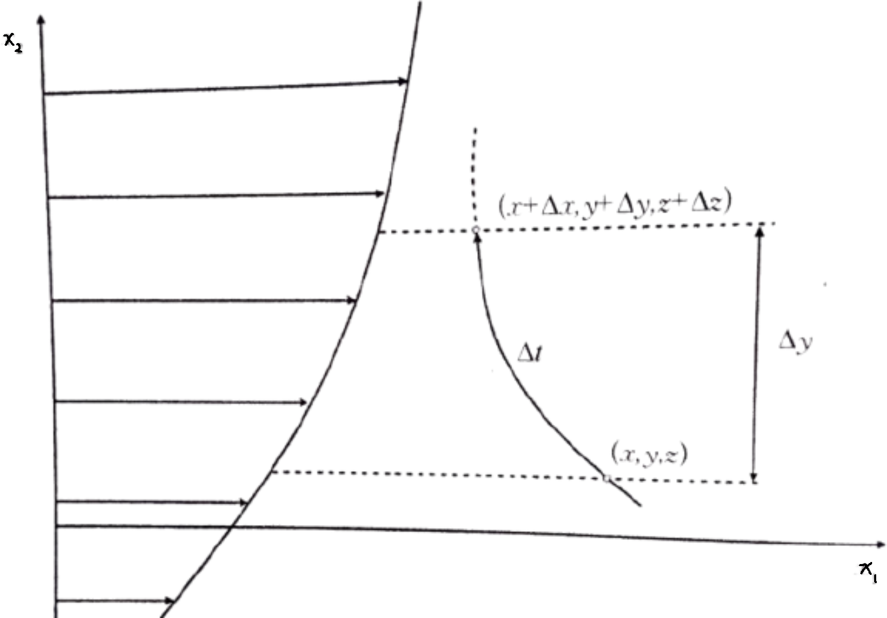

The Reynolds stress $-\rho\,\overline{u\,v}$ is a correlation between the two velocity fluctuation components at a point If $\overline{u\,v}\neq 0$, $u$ and $v$ are correlated if $\overline{u\,v}=0$, they are uncorrelated. In turbulent shear flow, in general, the two fluctuation components at a point are correlated. There is a physical mechanism, if $\partial U/\partial y>0$, when a fluid parcel from a low-speed layer moves toward a high-speed layer due to turbulent fluctuations, it develops a velocity deficit for the high-speed layer, i.e. $v>0,\;u < 0$; conversely, when a parcel from a high-speed layer moves toward a low-speed layer, $v< 0,\;u>0$. Hence $\overline{u\,v}< 0$. Similarly, if $\partial U/\partial y > 0$, then $\overline{u\,v}>0$

Define the correlation coefficient of $u$ and $v$ as $$ C_{uv}=\frac{\overline{u\,v}}{\sqrt{\overline{u^{2}}\,\overline{v^{2}}}} \Rightarrow -\rho\,\overline{u\,v} =-\,C_{uv}\,\rho\,u^{*}\,v^{*} $$ where $u^{*}=(\overline{u^{2}})^{1/2}$ and $v^{*}=(\overline{v^{2}})^{1/2}$ are the root-mean-square values of $u$ and $v$. Obviously, $-1 < C_{uv} < 1$. For simple shear turbulence, experiments show $C_{uv}\approx -0.4$. In fully developed turbulence far from a solid wall, $u^{*}$ and $v^{*}$ are of the same order of magnitude \[-\rho\,\overline{u\,v} =-\,C_{uv}\,\rho\,u^{*}\,v^{*} \Rightarrow -\rho\,\overline{u\,v}=C_{1}\,\rho\,{v^{*}}^{2}\] $$ \Longrightarrow\; C\,\cancel{\rho}\,v^{*}\,l\,\frac{\partial U}{\partial y} = C_{1}\,\cancel{\rho}\,(v^{*})^{2} \Longrightarrow\; C\,\cancel{v^{*}}\,l\,\frac{\partial U}{\partial y} = C_{1}\,(\,v^{*}\,)\,\cancel{v^{*}} \Rightarrow C\,l\,\frac{\partial U}{\partial y}=C_{1}\,v^{*} \Longrightarrow v^{*}=\frac{C}{C_{1}}\,l\,\frac{\partial U}{\partial y} = C_{2}\,l\,\frac{\partial U}{\partial y} $$ \[\Longrightarrow -\rho\,\overline{u\,v} =\rho\,l^{2}\left|\frac{\partial U}{\partial y}\right|\frac{\partial U}{\partial y}\] The constants $C_{1}$ and $C_{2}$ have been absorbed into the scale variable $l$; the absolute value sign on the right is introduced so that the Reynolds shear stress $-\rho\,\overline{u\,v}$ has the same sign as the strain-rate component $\partial U/\partial y>0$ $$ \Longrightarrow \nu_{t}=l^{2}\,\frac{\partial U}{\partial y} $$ \(\boxed{\nu_{t}=l^{2}\,\frac{\partial U}{\partial y}}\) is the Prandtl's mixing-length model for eddy viscosity
1Song Fu & Liang Wang (2023). Theory of Turbulence Modelling. ISBN 978-7-03-074639-9.